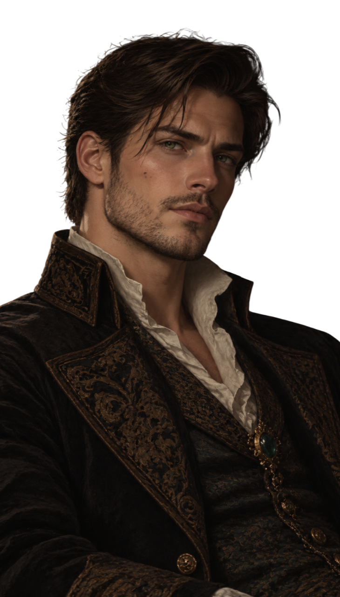
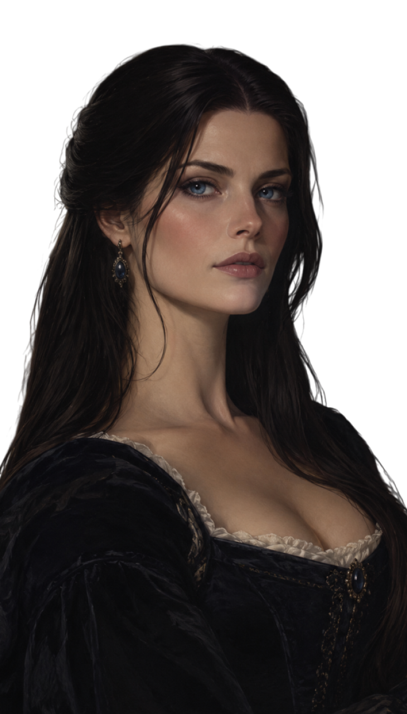

Le père : Dean Rivers

Origines : Britaniques.
Age : 35 Ans.
Date de Naissance : 1858.
Emploi : Magizoologiste au ministère de la Magie.
Ancienne Maison : Serdaigle.
« Il existe des créatures que les hommes craignent simplement parce qu'ils n'ont jamais pris le temps de les comprendre. »
Description Physique :
Dean Rivers est un homme de 35 ans à l'allure charismatique, élégante et naturellement imposante. Il possède un charme assez sauvage, renforcé par ses traits masculins prononcés et son regard particulièrement expressif.
Mesurant environ 1,85 m, il possède une silhouette athlétique, des épaules larges et une carrure solide, sans être excessivement musclé. Ses nombreuses excursions dans la nature lui ont permis de conserver une bonne condition physique.
Ses cheveux sont brun très foncé, épais et légèrement ondulés, souvent coiffés de manière quelque peu désordonnée. Quelques mèches retombent naturellement sur son front. Il porte généralement une barbe courte et soigneusement entretenue, qui accentue les contours de sa mâchoire.
Ses yeux vert foncé, profonds et captivants, constituent l'un de ses traits les plus remarquables. Son regard peut se montrer particulièrement intense lorsqu'il est concentré, mais devient beaucoup plus chaleureux lorsqu'il se trouve auprès de ses proches.
Sa peau est légèrement hâlée, notamment en raison du temps qu'il passe à l'extérieur. Son visage présente une mâchoire bien dessinée, des sourcils épais, un nez droit et quelques fines marques d'expression autour des yeux.
Dean privilégie les tenues simples, confortables et élégantes. Il porte fréquemment des chemises claires, des pantalons sombres, des gilets ou des pulls en laine. Lors de ses déplacements professionnels, il préfère des vêtements résistants, accompagnés de bottes et d'un long manteau.
Il conserve une posture assurée et une démarche tranquille. Son apparence inspire généralement confiance, bien qu'il puisse se montrer intimidant lorsqu'il adopte un air sérieux.
Caractère :
Dean est un homme curieux, intelligent, patient et profondément passionné.
D'un naturel relativement calme, il possède une personnalité chaleureuse qui contraste avec l'éducation stricte qu'il a reçue au sein de la famille Rivers.
Il apprécie les conversations intéressantes, les découvertes et les personnes capables de lui apprendre quelque chose. Il ne juge pas les individus selon leur statut social ou leur ascendance, préférant se faire sa propre opinion.
Observateur et réfléchi, Dean prend généralement le temps d'analyser une situation avant d'agir. Cette qualité lui est particulièrement utile dans son métier, où une réaction précipitée pourrait mettre en danger une créature magique ou les personnes qui l'accompagnent.
Cependant, lorsqu'un sujet le passionne, il peut devenir étonnamment bavard. Il lui arrive de parler longuement d'une espèce magique sans remarquer que son interlocuteur ne partage pas nécessairement son enthousiasme.
Il possède également un humour taquin et subtil. Il aime plaisanter avec ses proches, particulièrement avec Hazel, dont il cherche parfois à faire disparaître l'expression trop sérieuse.
Malgré sa gentillesse, Dean n'est pas naïf. Il sait se montrer ferme, autoritaire et particulièrement déterminé lorsque la situation l'exige.
Il supporte difficilement la cruauté envers les créatures magiques, les comportements arrogants et les personnes qui abusent de leur autorité.
Son Histoire :
Né en 1858, Dean Rivers est issu d'une ancienne famille de sorciers britanniques de sang-pur, réputée pour son attachement à la connaissance, à la nature et aux créatures magiques. Élevé dans une demeure entourée de jardins et située près d'une rivière, il développe très jeune une fascination pour le monde vivant. Intelligent, observateur, curieux et aventureux, il préfère explorer la nature plutôt que s'intéresser au prestige de sa lignée.
En 1869, il entre à Poudlard et rejoint la maison Serdaigle, où il se distingue notamment en botanique, en sortilèges et en soins aux créatures magiques. Élève sérieux mais parfois rêveur et désorganisé, il se laisse facilement absorber par ses passions. C'est durant sa scolarité qu'il rencontre Hazel Blackhorns, une jeune sorcière méthodique, réservée et perfectionniste. Malgré leurs caractères différents, une profonde complicité se développe entre eux, donnant progressivement naissance à une relation amoureuse.
Après ses études, Dean poursuit sa passion et devient magizoologiste au ministère de la Magie, travaillant dans le domaine de la réglementation et de la protection des créatures magiques. Il participe à diverses missions d'observation et de préservation, principalement en Grande-Bretagne. Convaincu que chaque créature mérite respect et compréhension, il privilégie toujours la patience et le bien-être animal plutôt que les méthodes intrusives.
Dean épouse ensuite Hazel, devenue médicomage. Leur mariage unit deux anciennes familles partageant le respect du savoir et des traditions. Ensemble, ils construisent un foyer équilibré malgré leurs différences : Hazel apporte rigueur et organisation, tandis que Dean se montre plus spontané, indulgent et enthousiaste.
Le couple accueille deux filles : Inaya en 1882, une enfant intelligente, observatrice et déterminée, puis Izy en 1883, une petite fille joyeuse, espiègle et curieuse, qui ressemble davantage à son père. Dean entretient une relation privilégiée avec chacune d'elles, encourageant leur indépendance et leur soif de connaissances. Il partage notamment sa passion pour les créatures magiques avec Izy, tandis qu'il respecte le tempérament plus prudent et réfléchi d'Inaya.
En tant que père, Dean est affectueux, patient et protecteur, bien que parfois trop indulgent. Sa passion pour son travail peut également lui faire perdre la notion du temps, au point de négliger occasionnellement certaines responsabilités familiales. Malgré ces défauts, il demeure profondément attentif aux besoins de ses filles et cherche toujours à les comprendre plutôt qu'à leur imposer ses propres ambitions.
En 1893, âgé de 35 ans, Dean poursuit sa carrière au ministère tout en accompagnant sa famille dans une nouvelle étape. Sa fille aînée, Inaya, entre à Poudlard et rejoint Serpentard, contrairement à ses deux parents qui avaient étudié à Serdaigle. Loin d'en être déçu, Dean accepte cette répartition et y reconnaît l'ambition, l'indépendance et la détermination de sa fille. Pendant ce temps, il profite de la dernière année d'Izy à la maison avant son propre départ pour Poudlard.
Profondément attaché aux valeurs de sa famille, Dean ne recherche ni la gloire ni la puissance. Il souhaite avant tout contribuer à la protection des créatures magiques et transmettre à ses enfants le respect du vivant, la curiosité et l'ouverture d'esprit.
Pour Dean Rivers, le plus précieux héritage qu'il puisse offrir à ses filles n'est ni sa fortune, ni son nom, ni ses connaissances, mais la liberté de choisir leur propre avenir et de devenir les personnes qu'elles souhaitent être.
La mère : Hazel Blackhorns Rivers

Origines : Britaniques.
Age : 35 Ans.
Date de Naissance : 1858.
Emploi : Médicomage.
Ancienne Maison : Serdaigle.
« La véritable force ne réside pas dans le pouvoir que l'on possède, mais dans ce que l'on choisit d'en faire. »
Description Physique :
Hazel Rivers est une femme de 35 ans à l'allure élégante, raffinée et naturellement distinguée. Elle possède une beauté assez froide au premier abord, mais qui s'adoucit lorsqu'elle sourit.
Sa peau est très claire, presque porcelainée, contrastant avec ses longs cheveux d'un noir charbon profond, légèrement ondulés. Elle les porte généralement relevés dans une coiffure soignée, laissant parfois quelques mèches encadrer son visage.
Ses yeux d'un bleu intense et profond constituent sans doute son trait le plus remarquable. Son regard est perçant, observateur et parfois intimidant. Elle semble capable de deviner les pensées de son interlocuteur simplement en le regardant.
Son visage présente des traits fins et harmonieux, des pommettes délicatement dessinées, un nez droit et des lèvres naturellement rosées. Quelques discrètes taches de rousseur viennent adoucir son apparence.
De taille moyenne, environ 1,68 m, Hazel possède une silhouette élancée et une posture toujours droite.
Elle privilégie des vêtements sobres et élégants, souvent dans des teintes sombres : noir, bleu nuit, vert profond ou gris anthracite. Elle apprécie les chemisiers raffinés, les longues jupes et les robes victoriennes aux coupes discrètes.
Elle porte régulièrement un petit pendentif orné d'une pierre bleue, auquel elle tient particulièrement.
Caractère :
Hazel est une femme intelligente, réfléchie, exigeante et profondément protectrice.
Élevée dans la rigueur de la famille Blackhorne, elle a appris à maîtriser ses émotions et à ne jamais agir sans réfléchir. Elle conserve généralement un calme remarquable, même dans les situations les plus délicates.
Elle n'est pas particulièrement bavarde avec les inconnus et préfère observer avant d'accorder sa confiance. Cette réserve lui donne parfois une apparence distante, voire hautaine, alors qu'elle se montre beaucoup plus chaleureuse dans l'intimité.
Perfectionniste et méthodique, Hazel supporte difficilement la négligence, les mensonges et le manque de sérieux. Lorsqu'elle entreprend quelque chose, elle souhaite le faire correctement, quitte à y consacrer davantage de temps que nécessaire.
Elle possède également un caractère affirmé. Elle sait défendre ses convictions et n'hésite pas à contredire quelqu'un lorsqu'elle estime avoir raison. Ses remarques peuvent être particulièrement piquantes, bien qu'elle les prononce presque toujours avec une politesse irréprochable.
Malgré cette sévérité apparente, Hazel est une femme sensible, généreuse et attentive aux autres. Son métier de médicomage reflète parfaitement son désir d'aider et de protéger.
Avec son époux Dean, elle se montre plus détendue, laissant parfois apparaître un humour subtil et une tendresse qu'elle réserve à peu de personnes.
Avec ses filles, Inaya et Izy, elle est aimante, mais exigeante. Elle tient à leur transmettre une bonne éducation, le respect d'autrui et l'importance du travail. Elle peut se montrer stricte, notamment lorsque leurs bêtises dépassent certaines limites.
Elle a toutefois conscience que ses deux filles possèdent des caractères très différents et cherche à respecter leur individualité.
Hazel possède aussi quelques défauts : elle peut être têtue, trop critique, particulièrement méfiante et parfois maladroite lorsqu'il s'agit d'exprimer ses sentiments.
Sa plus grande peur reste de ne pas parvenir à protéger les personnes qu'elle aime.
Son Histoire :
Née en 1858, Hazel Blackhorns est issue d'une ancienne famille de sorciers britanniques réputée pour ses connaissances médicinales, sa maîtrise des enchantements défensifs et son attachement aux traditions. Élevée dans un environnement strict où les sentiments s'expriment davantage par les actes que par les paroles, elle développe très jeune un caractère calme, observateur, perfectionniste et parfois obstiné.
En 1869, elle entre à Poudlard et rejoint la maison Serdaigle, où elle excelle notamment en potions et en botanique. Élève brillante mais réservée, elle y rencontre Dean Rivers, un jeune sorcier passionné par les créatures magiques. Malgré leurs différences de caractère, une profonde complicité se développe entre eux au fil des années.
Après ses études, Hazel poursuit sa vocation et devient médicomage, mettant ses connaissances et sa rigueur au service des autres. Elle épouse ensuite Dean, devenu magizoologiste au ministère de la Magie. Ensemble, ils fondent un foyer où se mêlent savoir, traditions et respect du monde magique, tout en conservant une certaine indépendance vis-à-vis de leurs familles respectives.
Le couple accueille deux filles : Inaya en 1882, une enfant intelligente, indépendante et obstinée qui ressemble beaucoup à sa mère, puis Izy en 1883, une petite fille joyeuse, spontanée et curieuse, davantage semblable à son père.
En tant que mère, Hazel demeure exigeante et peu démonstrative, mais profondément attentive au bonheur de ses enfants. Elle exprime principalement son affection par de petites attentions et cherche à leur transmettre le sens des responsabilités sans les enfermer dans les traditions familiales.
En 1893, âgée de 35 ans, Hazel partage son quotidien entre sa profession et sa famille. Sa fille aînée, Inaya, fait son entrée à Poudlard et rejoint Serpentard, une répartition qui surprend Hazel sans pour autant la décevoir. Izy, âgée de dix ans, attend encore son tour.
Bien que son perfectionnisme et son besoin de contrôle puissent parfois compliquer ses relations familiales, Hazel apprend progressivement à accepter que ses filles suivent leur propre chemin. Profondément attachée à ses origines, elle considère néanmoins que la véritable valeur d'une personne ne réside pas dans son nom ou son sang, mais dans ses actes et ses choix.
Retour